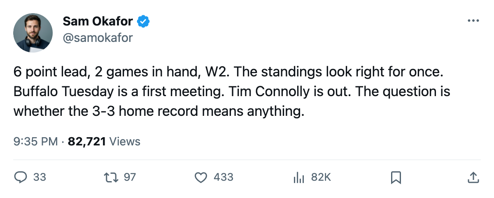

BUF
BUFNortheast Race: 6 points, 2 games in hand, and Buffalo visits Tuesday
Toronto's cushion over Boston has doubled since last edition. The standings, the series, and what Tuesday's first meeting means.
 Sam OkaforLeafs beat reporter · Queen City Telegram
Sam OkaforLeafs beat reporter · Queen City TelegramToronto leads the Northeast by 6 points over  Boston Bruins, with a 2-game lead in games played. That margin was 3 points when the last edition closed on 2005-11-09.
Boston Bruins, with a 2-game lead in games played. That margin was 3 points when the last edition closed on 2005-11-09.
 Toronto Maple Leafs is 10-3-0, 26 points, on a 2-game win streak. The 5-2 road win at San Jose on 2005-11-09 and the 2-1 overtime win over Los Angeles on 2005-11-12 account for the change. Boston Bruins is 8-3-2, 20 points, on a 1-game losing streak, their most recent being a 2-1 overtime loss to Edmonton on 2005-11-11.
Toronto Maple Leafs is 10-3-0, 26 points, on a 2-game win streak. The 5-2 road win at San Jose on 2005-11-09 and the 2-1 overtime win over Los Angeles on 2005-11-12 account for the change. Boston Bruins is 8-3-2, 20 points, on a 1-game losing streak, their most recent being a 2-1 overtime loss to Edmonton on 2005-11-11.
| club | GP | W | L | OTL | PTS | GF | GA | Streak |
|---|---|---|---|---|---|---|---|---|
| TOR | 16 | 10 | 3 | 0 | 26 | 53 | 29 | W2 |
| BOS | 14 | 8 | 3 | 2 | 20 | 40 | 32 | L1 |
| BUF | 14 | 3 | 6 | 2 | 14 | 38 | 42 | W2 |
| MTL | 14 | 4 | 6 | 3 | 13 | 31 | 36 | W1 |
| OTT | 12 | 4 | 7 | 1 | 9 | 30 | 31 | L1 |
The season series
Toronto has played 4 of 4 scheduled division games so far: 2-1-1 against the division, including a 1-0-0 mark with one overtime win against  Montreal Canadiens and a 1-0-0 against
Montreal Canadiens and a 1-0-0 against  Ottawa Senators. The lone loss came against Boston, 1-0-0 in Boston's favour.
Ottawa Senators. The lone loss came against Boston, 1-0-0 in Boston's favour.
Buffalo and Toronto have not met yet. The first meeting lands at HSBC Arena on 2005-11-15. Buffalo enters on a 2-game win streak, both wins by one goal. They are 3-3 at home this season.
Injuries on both sides
Toronto has no player on the injured list. Buffalo is missing  Tim Connolly82, a 78-overall centre, with a rib, out until 2005-11-30, and Janne Laukkanen76, a 70-overall defenceman, with a foot, out until 2005-11-16.
Tim Connolly82, a 78-overall centre, with a rib, out until 2005-11-30, and Janne Laukkanen76, a 70-overall defenceman, with a foot, out until 2005-11-16.
The injury report is thin by league standards but losing their top available centre changes the matchup. Both wins in the current streak came without Connolly. Their 24 goals in 14 games without him suggest the offence bends but does not break.
What Boston would need
Boston plays  New York Islanders on 2005-11-14 and
New York Islanders on 2005-11-14 and  Philadelphia Flyers on 2005-11-16 before meeting Toronto at the Air Canada Centre on 2005-11-19. The Bruins would need to take points in both of those and then beat Toronto to cut the lead to 2. Toronto would need to lose to Buffalo and Detroit before the Boston game for that scenario to breathe.
Philadelphia Flyers on 2005-11-16 before meeting Toronto at the Air Canada Centre on 2005-11-19. The Bruins would need to take points in both of those and then beat Toronto to cut the lead to 2. Toronto would need to lose to Buffalo and Detroit before the Boston game for that scenario to breathe.
The schedule gives Toronto 5 games before the next edition closes. Two at home (Detroit, Boston), one on the road (Buffalo). The cushion is not safe until the games are played, but the arithmetic is no longer tight.
